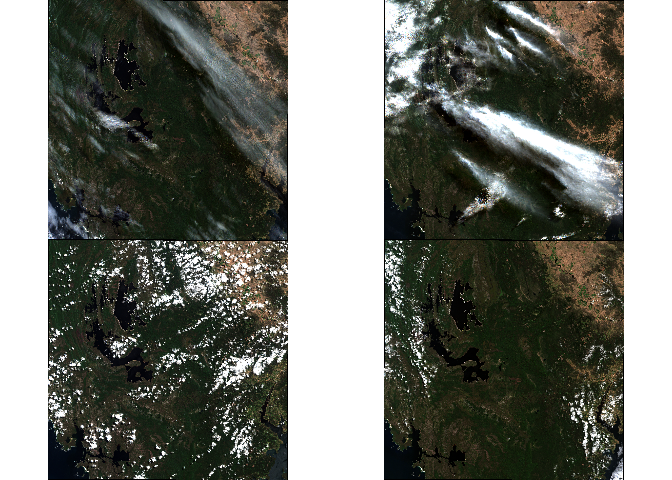

The goal of scene is to …
You can install the development version of scene like so:
# FILL THIS IN! HOW CAN PEOPLE INSTALL YOUR DEV PACKAGE?Get imagery, this uses recent dates and a small extent around a longlat (see scene()).
By default we get the “best” images from all available. Internally we sort by “solar day” (scenes taken at the same time, but possibly spread over tiles and/or zones). Atm “best” is defined by information content (super rough, just we look at the least compressible scenes).
‘date’ is treated like a date range (if you get a stac error go further back in time for the max.) You can input strings like “2024” or “2024-02” for intervals, or a full range of date-times.
options(parallelly.fork.enable = TRUE, future.rng.onMisuse = "ignore")
library(furrr); plan(multicore)
#> Loading required package: future
x <- scene:::scene(date = Sys.Date() + c(-180, -2), keep = 4L)
#> processing %i (keep) of %i scenes from %i (solar) days45150
plan(sequential)
library(terra)
#> terra 1.7.65
par(mfrow = n2mfrow(nrow(x)))
jk <- lapply(x$dsn, \(.x) plotRGB(rast(.x)))
x$date
#> [1] "2024-02-13" "2024-02-28" "2023-12-25" "2024-01-09"Other approaches use a “median” approach, this is just part of ongoing experimentation for small areas.